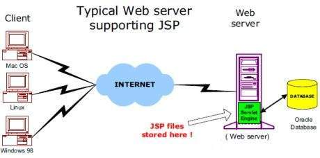

Capitulo 7 PHP avanzado con DBMS
Conexiones persistentes a bases de datos
Las conexiones persistentes son enlaces que no se cierran al finalizar la ejecución de un script. Cuando se solicita una conexión persistente, PHP comprueba si ya hay una idéntica (que ya estuviera abierta antes), utilizándola si existe. Si no, crea el enlace. Una conexión «idéntica» es una conexión que fue abierta por el mismo host, con el mismo usuario y la misma contraseña (donde sea aplicable).
Aquellos que no están plenamente familiarizados con la forma en que trabajan y distribuyen la carga los servidores web podrían confundir para qué sirven las conexiones persistentes. En particular, con ellas no se pueden abrir «sesiones de usuario» en un mismo enlace, no se puede construir una transacción eficiente y no hacen muchísimas otras cosas. De hecho, para ser sumamente precisos, las conexiones persistentes no proporcionan ninguna otra funcionalidad que no fuera posible realizar con sus hermanas no persistentes
¿Por qué?
Esto tiene que ver con la manera en que los servidores web funcionan. Existen tres formas en las cuales un servidor web puede generar páginas web usando PHP.
El primer método es emplear PHP como una «envoltura» CGI. Cuando se ejecuta de esta forma, se crea y se destruye una instancia del intérprete de PHP por cada solicitud de página (para una página de PHP) al servidor web. Debido a que esta instancia se destruye después de cada solicitud, cualquier recurso que adquiera (tal como un enlace a un servidor de base de datos SQL) es cerrado en la destrucción de dicha instancia. En este caso, no se gana nada utilizando conexiones persistentes: simplemente no persisten.
El segundo método, y más popular, es ejecutar PHP como módulo en un servidor web multiproceso, lo que actualmente solo incluye a Apache. Un servidor multiproceso normalmente tiene un proceso (el padre) que coordina un grupo de procesos (sus hijos) los cuales son los que realmente hacen el trabajo de servir páginas web. Cuando una solicitud proviene de un cliente, esta es cedida a uno de los hijos que no esté ya sirviendo a otro cliente. Esto significa que cuando el mismo cliente hace una segunda solicitud al servidor, esta podría ser servida por un proceso hijo diferente a la primera vez. Cuando se abre una conexión persistente, cada página que solicite servicios SQL puede reusar la misma conexión establecida al servidor SQL.
El último método es utilizar PHP como complemento para un servidor web multihilo. Actualmente, PHP 4 tiene soporte para ISAPI, WSAPI, y NSAPI (en Windows), las cuales permiten usar PHP como un complemento en servidores multihilo como Nestcape FastTrack (iPlanet), Microsoft Internet Information Server (IIS), y O'Reilly's WebSite Pro. El comportamiento es esencialmente el mismo para el modelo multiproceso descrito antes.
Si las conexiones persistentes no tienen ninguna funcionalidad adicional, ¿para que son útiles?
La respuesta es extremadamente simple: Eficacia. Las conexiones persistentes son buenas si la sobrecarga para crear enlaces al servidor SQL es alta. Que esta sobrecarga sea realmente alta o no depende de muchos factores, como el tipo de base de datos que se emplea, si esta se encuentra en la misma computadora en la que está el servidor web, la carga de la máquina donde está el servidor SQL, etc. En resumidas cuentas, si la sobrecarga de una conexión es alta, las conexiones persistentes ayudan considerablemente, haciendo que un proceso hijo únicamente se conecte una vez durante su vida útil, en lugar de hacerlo cada vez que procese una página que requiera una conexión al servidor SQL. Esto significa que cada hijo que abra una conexión persistente tendrá su propia conexión persistente abierta al servidor. Por ejemplo, si se tienen 20 procesos hijos diferentes que ejecutan un script que realiza una conexión persistente al servidor SQL, se tendrán 20 conexiones diferentes al servidor SQL, una por cada hijo.
Observe, sin embargo, que esto puede tener algunos inconvenientes si se está usando una base de datos con un limite de conexiones que sea excedido por las conexiones persistentes hijas. Si la base de datos tiene un limite de 16 conexiones simultáneas, y en el curso de una sesión de un servidor ocupado 17 hilos hijos intentan conectarse, uno de ellos no será capaz de hacerlo. Si un script contiene errores que impidan el cierre de las conexiones (como un bucle infinito), la mencionada base de datos con solamente 16 conexiones podría saturarse rápidamente. Compruebe la documentación de su base de datos para obtener información sobre el manejo conexiones abandonadas o inactivas.
Un resumen importante. Las conexiones persistentes fueron diseñadas para tener una correspondencia uno a uno con las conexiones normales. Esto significa que siempre se pueden reemplazar las conexiones persistentes por conexiones no persistentes, no cambiando así la forma de funcionar un script. Esto podría (y probablemente lo hará) cambiar la eficacia del script, aunque no su funcionamiento.
Referencias
Página Web oficial manual de PHP de conexiones persistentes. Tomado de: http://www.tutorialspoint.com/jsp/
Capitulo 8 ASP avanzado con DBMS
Trabajar con bases de datos en ASP
Una de las principales ventajas que presenta el trabajar con páginas dinámicas es el poder almacenar los contenidos en bases de datos. De esta forma, podemos organizarlos, actualizarlos y buscarlos de una manera mucho más simple.
ASP nos ofrece una forma muy eficaz de interaccionar con estas bases de datos gracias al uso del componente ADO (ActiveX Data Objects) el cual permite acceder a dichas bases de una forma sencilla.
Este ADO no es más que un conjunto de objetos que, utilizados en conjunto, nos permiten explotar de una forma muy versátil las bases de datos de nuestra aplicación. No entraremos por el momento en consideraciones teóricas al respecto.
Por otra parte, lo scripts ASP deben establecer un dialogo con la base de datos. Este dialogo se lleva a cabo a partir de un idioma universal: el SQL (Structured Query Language) el cual es común a todas las bases de datos. Este lenguaje resulta, como veremos en el manual de SQL, muy potente y fácil de aprender.
En este manual de ASP nos limitaremos a utilizar las instrucciones básicas que serán aprendidas a medida que explicamos las diferentes formas de actuar sobre una base de datos a partir de páginas ASP.
La base de datos que ha sido utilizada en estos ejemplos es MS Access. No es por supuesto la única si bien es la más corriente en pequeños PCs y resulta absolutamente operativa siempre que las tablas no sean astronómicamente grandes. Esperamos poder ofreceros próximamente también un pequeño curso de Access en el que explicar los principios rudimentarios necesarios para poder servirnos de él. No obstante, esta aplicación resulta suficientemente fácil e intuitiva como para poder prescindir de dicho curso por el momento.
Referencias
Pagina Web desarrolloweb manual de ASP de conexiones persistentes.Tomado de: http://www.desarrolloweb.com/articulos/256.php
Capitulo 9 JSP avanzado con DBMS
JSP - Arquitectura
El servidor web necesita un motor es decir JSP. recipiente para procesar las páginas JSP. El contenedor JSP es responsable de la interceptación de peticiones de páginas JSP. En este tutorial se hace uso de Apache, que se ha incorporado en contenedor JSP para apoyar el desarrollo de páginas JSP.
Un contenedor JSP funciona con el servidor Web para proporcionar el entorno de ejecución y otros servicios de una JSP necesita. Se sabe comprender los elementos especiales que son parte de las páginas JSP.
Siguiente diagrama muestra la posición del contenedor JSP y archivos JSP en una aplicación Web.
Procesamiento de JSP:
Los siguientes pasos se explica cómo el servidor web crea la página web utilizando JSP: - Al igual que con una página normal, el navegador envía una petición HTTP al servidor web. - El servidor web reconoce que la solicitud HTTP es para una página JSP y lo reenvía a un motor de JSP. Esto se hace mediante el uso de la página JSP o URL que termina con .jsp en lugar de .html. - El motor JSP carga la página JSP desde el disco y lo convierte en un contenido servlet. Esta conversión es muy sencillo en el que todo texto de la plantilla se convierte en println () declaraciones y todos los elementos JSP se convierten a código Java que implementa el comportamiento dinámico correspondiente de la página. - El motor JSP se compila el servlet en una clase ejecutable y reenvía la solicitud original a un motor de servlets. - Una parte del servidor web llamado el motor de servlets carga la clase servlet y lo ejecuta. Durante la ejecución, el servlet produce una salida en formato HTML, que el motor servlet pasa al servidor web dentro de una respuesta HTTP. - El servidor web envía la respuesta HTTP para su navegador en términos de contenido HTML estático. - Finalmente navegador web se encarga de la página HTML generado dinámicamente dentro de la respuesta HTTP exactamente como si se tratara de una página estática.
Todos los pasos antes mencionados se pueden mostrar a continuación en el siguiente diagrama:

Normalmente, el motor JSP comprueba si un servlet para un archivo JSP ya existe y si la fecha de modificación de la JSP es más antiguo que el servlet. Si el JSP es más antiguo que su servlet generado, el contenedor JSP supone que el JSP no ha cambiado y que el servlet generado aún coinciden con el contenido de la JSP. Esto hace que el proceso sea más eficiente que con otros lenguajes de script (como PHP) y por lo tanto más rápido.
Así pues, en cierto modo, una página JSP es realmente sólo otra manera de escribir un servlet sin tener que ser un genio de la programación Java. A excepción de la fase de traducción, una página JSP se maneja exactamente igual que un servlet regulares
Referencias
Página Web tutorialspoint manual de JSP de conexiones persistentes. Tomado de: http://www.tutorialspoint.com/jsp/